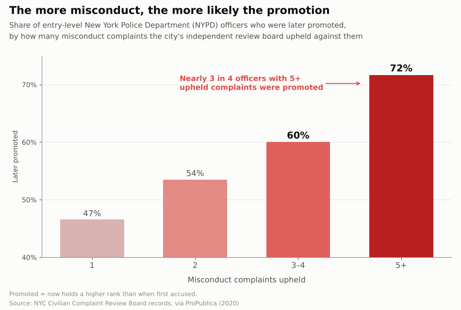
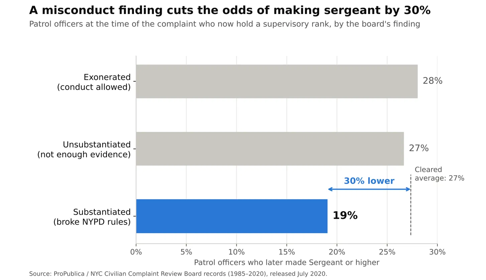

Persuasive or Deceptive Visualization?
- Flyson Lin (f9lin@ucsd.edu)
- Dilraj Grewal (dgrewal@ucsd.edu)
- Yue Hu (yuh181@ucsd.edu)
- Edmond Koei (ekoei@ucsd.edu)
Proposition
Officers with substantiated misconduct still get promoted.
For The NYPD fails to hold officers accountable: officers with more upheld misconduct complaints are more likely to be promoted, so misconduct is effectively rewarded instead of punished.
Against The NYPD's disciplinary system works: a substantiated misconduct finding hurts an officer's career, and officers with one are less likely to reach a supervisory rank than officers who were cleared.
Each design decision below is scored on a diverging scale from −2 (fully deceptive) to +2 (fully earnest).
For Visualization 1: The more misconduct, the more likely the promotion

Design decisions
Binning upheld misconduct into 1 / 2 / 3–4 / 5+ −0.5
We counted each entry-level officer's substantiated allegations and binned them into four groups, which turns thousands of individual records into a clean, rising staircase that is easy to read at a glance. Merging the sparse upper values into "3–4" and "5+" smooths out noise that would otherwise make the trend look less consistent. The axis is labeled "complaints," but we actually counted allegations, and a single complaint can contain several allegations, so this pushes officers into higher bins. We considered counting distinct complaints instead, but that left only 21 officers in the 5+ group, which was too small to carry the headline.
Defining "promoted" as any higher rank, including detective −1
We counted an officer as promoted if their 2020 rank is higher than their rank when first accused, and we included the detective designation. Detective is an assignment, not a civil-service promotion, so including it raises every bar and makes promotion after misconduct look more common. The footnote states our definition, which gives the chart a transparent look while the choice itself works in our favor. Restricting to Sergeant and above would have been stricter, but it lowered every bar below 50% and weakened the message.
Starting the y-axis at 40% −2
Truncating the axis at 40% makes the 5+ bar (72%) look about four times taller than the 1-complaint bar (47%), when the real difference is closer to 1.5 times. This is the single most persuasive choice in the chart, because the eye compares bar heights before it reads the labels. We kept the percentage labels on every bar so the chart still looks careful and precise. A zero-based axis would have been honest, but the rise from 47% to 72% looked modest by comparison.
A red gradient that darkens as misconduct increases −0.5
The sequential red scale correctly encodes order, since more upheld complaints get a darker color, so the encoding itself is legitimate. Red also signals danger and wrongdoing, which adds an emotional charge and makes the 5+ bar feel alarming before the reader looks at any numbers. We considered a single neutral color, but it made the chart read as a dry statistic rather than a warning.
Causal title and the "Nearly 3 in 4" callout −1
The title "The more misconduct, the more likely the promotion" frames a correlation as if misconduct leads to promotion. Officers with more complaints have usually served longer, and time on the job is the biggest driver of promotion. The red callout points at the 5+ bar, which is the most dramatic number and also the smallest group (272 of 3,602 officers), and the chart never shows group sizes. We kept the language calm and factual rather than accusatory, so the slant is harder to notice than a charged word like "rewarded" would have been.
Against Visualization 2: A misconduct finding cuts the odds of making sergeant

Design decisions
Patrol officers only, with promotion to Sergeant or above +1.5
We limited the data to officers who were patrol officers at the time of the complaint, so everyone started from the same rank. We also counted only promotions to Sergeant and above, because a detective assignment is a designation rather than a civil-service promotion and would have inflated the numbers. This makes the comparison fairer than a raw promotion count, which is why we scored it as earnest.
Comparing three outcome groups +1
We compared substantiated complaints with exonerated and unsubstantiated ones, so the audience could see what happens to officers who were investigated but cleared. Because the two cleared groups have nearly identical promotion rates (28% and 27%), the lower substantiated rate looks like a consistent pattern rather than random noise. The comparison is still limited, since the dataset only includes officers with at least one substantiated allegation and has no group of officers who were never investigated.
Title: "cuts the odds of making sergeant by 30%" −1.5
We expressed the gap as a relative 30% drop because it sounds far more dramatic than the actual 8-percentage-point difference (27% vs. 19%). The word "odds" is technically incorrect, since these are probabilities, and "cuts" implies that the misconduct finding caused the lower promotion rate, which the data cannot prove. We considered the plain title "19% vs. 27%," but it was accurate and much less persuasive.
Dashed average line and "30% lower" arrow −1
We added a dashed line at the cleared average and a labeled arrow to draw the reader's eye to the gap and repeat the 30% figure from the title. The 27% "cleared average" is a simple average of the two groups that ignores their different sizes, which subtly shapes the comparison. Labeling each bar alone was the honest alternative, but the gap was far less memorable without the annotation.
Blue highlight, gray comparison bars, axis from zero +0.5
We highlighted only the substantiated bar in blue so it stands out against the neutral gray cleared groups, which directs attention without distorting the data. Starting the axis at zero keeps the bar lengths honest, and that visual credibility makes the slanted title more believable. We chose horizontal bars so the plain-English labels, such as "(broke NYPD rules)," fit next to each bar.
Final reflection
Throughout this project, we learned how much the way data is presented can influence people's opinions. One of the easiest parts was choosing which information to highlight for each side of our proposition. It was more difficult to build two convincing arguments from the same dataset. For example, when supporting our proposition, we focused on the fact that 72% of entry-level officers with five or more upheld misconduct allegations were later promoted. On the other side, we highlighted that patrol officers with a substantiated complaint made sergeant less often than officers who were cleared. Both statistics came from the same dataset, but audiences can reach opposite conclusions depending on how the data is presented.
What surprised us most was how small design choices could change how people understand the data. When we started the y-axis at 40% instead of 0%, the difference in promotion rates looked much bigger than it actually was. Interestingly, our opposing chart kept a zero-based axis and still exaggerated its gap, simply by describing an 8-point difference as "30% lower." Our definitions mattered just as much: counting a detective assignment as a promotion helped one side, while excluding it helped the other. This made us realize that even when every number is accurate, the way we frame and define it can still mislead readers, so ethical visualization is not just about accurate numbers but about making sure the presentation does not give people the wrong idea.
We think persuasive design choices are acceptable as long as they help people understand the data without hiding important information. Highlighting a key group with color or bolding important words is fine, because it helps the reader focus on what matters. A choice becomes misleading when it makes differences seem bigger than they are, implies a cause the data cannot support, or leaves out a detail that would change how the audience reads the result, such as group sizes or how long officers had served. We also found that the line between acceptable and misleading is hard to draw in advance, because the same technique can be honest in one chart and deceptive in another. Overall, this project taught us to be more careful when creating graphs and to think about how our design choices might affect the audience.